tools/sprites/build_vesper_v07.py. PNGs em reports/design/v07_m4/pendentes/ (nada foi pra assets/sprites/). Do rascunho do dono aproveitei só a ideia do ícone (cordão em laço + crachá com cabeça e ombros, amarelo); o desenho é redesenhado em pixel, 6×9 px.tools/sprites/build_vesper_v07_r7.py (r3d), arquivos *_r7*.png em pendentes/. Nada das rodadas anteriores foi sobrescrito, e os destroços não foram tocados.icon_prop_wall_bunk_r7 é cópia do r6).prop_lab_bench) com gaveta, LED e caixinha de lâminas.reports/design/before/prop_microscope_v07m2.png.Cabine com a mesa de briefing 2×2 no meio (cadeiras dos lados), mesa de navegação ao lado da estação e mesinha no canto. Alojamento com o beliche novo e a mesinha entre as camas. "Apoio" (refeitório/oficina/lab) com a mesa de refeitório, a bancada de manutenção e os dois microscópios (A à esquerda, B à direita). Halos coloridos são só da montagem.
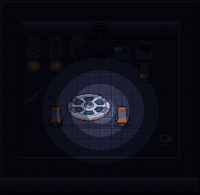
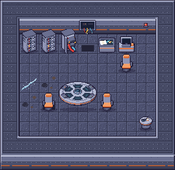
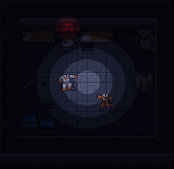
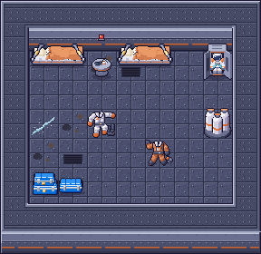
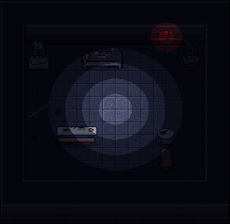
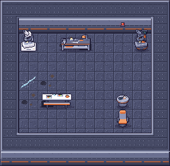
| id | nome | lugar | tiles | colide | sprite | ícone | arquivo (pendentes/) |
|---|---|---|---|---|---|---|---|
prop_wall_bunk | Beliche de parede | desk | 2×1 | sim | 64×40 | icon_prop_wall_bunk 16×16 | prop_wall_bunk_r7 |
prop_briefing_table | Mesa de briefing | floor | 2×2 | sim | 64×72 | icon_prop_briefing_table 16×16 | prop_briefing_table_r7 |
prop_mess_table | Mesa de refeitório | floor | 2×1 | sim | 64×40 | icon_prop_mess_table 16×16 | prop_mess_table_r7 |
prop_repair_bench | Bancada de manutenção | floor | 2×1 | sim | 64×40 | icon_prop_repair_bench 16×16 | prop_repair_bench_r7 |
prop_nav_table | Mesa de navegação | floor | 1×1 | sim | 32×40 | icon_prop_nav_table 16×16 | prop_nav_table_r7 |
prop_side_table | Mesinha de canto | floor | 1×1 | sim | 32×40 | icon_prop_side_table 16×16 | prop_side_table_r7 |
prop_microscope | Microscópio (já existe) | floor | 1×1 | sim | 32×40 | icon_prop_microscope 16×16 | prop_microscope_r7_A / _B (escolher) |
_r7. O microscópio escolhido substitui assets/sprites/prop_microscope.png (e o ícone), sem mudar _PROP_TABLE._PROP_TABLE como as outras. Custo é decisão de jogo, mas a sugestão é _S (ferro) pra refeitório, mesinha e bancada, e _T (ferro + silício) pra briefing e navegação, que têm telas.tools/sprites/build_vesper_v07_r6.py; arquivos *_r6*.png (as rodadas anteriores ficam intactas e aparecem como "antes").#1b1630).PROP_LIFT 24 só pra ele. Não fiz: fica como proposta, se o dono pedir.Mesma casca aprovada, na ordem do jogo (chão → decal → topo/face da parede → props pelo pé). Duas camas 2×1 na parede norte (tiles 1–2 e 4–5), luz de emergência entre elas, armário de traje no canto, cilindros de O₂ (r5), pilha de contêineres e 2 macacões no chão. A montagem A usa as candidatas A; a B, as B. O halo vermelho é só da montagem.
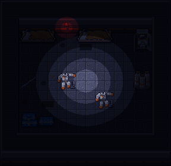
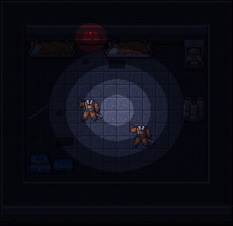
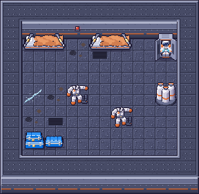
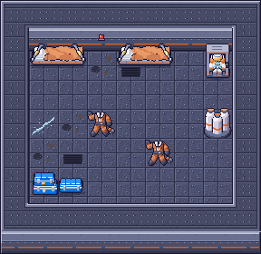
| id | nome | lugar | tiles | colide | sprite | ícone | arquivo atual (pendentes/) |
|---|---|---|---|---|---|---|---|
prop_wall_bunk | Beliche de parede (cama suspensa por cabos) | desk | 2×1 | sim | 64×40 | icon_prop_wall_bunk 16×16 | prop_wall_bunk_r6 (novo) |
prop_suit_locker | Armário de traje (EVA) | floor | 1×1 | sim | 32×40 | icon_prop_suit_locker 16×16 | prop_suit_locker_r6_A / _B (novo, escolher) |
prop_uniforms | Macacão largado | decal | 1×1 | não | 32×32 | icon_prop_uniforms 16×16 | prop_uniforms_r6_A / _B (novo, escolher) |
prop_o2_cylinders | Cilindros de O₂ | floor | 1×1 | sim | 32×40 | icon_prop_o2_cylinders 16×16 | _r5 |
prop_server_rack | Rack de servidor | floor | 1×1 | sim | 32×40 | icon_prop_server_rack 16×16 | _r5 |
prop_server_rack_open | Rack de servidor aberto | floor | 1×1 | sim | 32×40 | icon_prop_server_rack_open 16×16 | _r5 |
prop_command_table | Mesa de comando | floor | 2×1 | sim | 64×40 | icon_prop_command_table 16×16 | _r5 |
prop_workstation | Estação de computador | floor | 1×1 | sim | 32×40 | icon_prop_workstation 16×16 | _r5 |
prop_pilot_chair | Cadeira de piloto | floor | 1×1 | não | 32×40 | icon_prop_pilot_chair 16×16 | _r5 |
prop_container_stack | Pilha de contêineres | floor | 2×1 | sim | 64×40 | icon_prop_container_stack 16×16 | sem sufixo (r4) |
wall_cable_panel | Painel de cabos soltos | face | 1×1 | não | 32×24 | icon_wall_cable_panel 16×16 | sem sufixo (r4) |
_r6, _r6_A, _r6_B são só desta rodada). Depois da escolha do dono, a candidata vira prop_suit_locker.png / prop_uniforms.png.desk é novidade: hoje o jogo só tem prop de 1 tile (as prop_wall_desk_a/b são 1×1, e as 2×1 de chão também ainda não existem no código). O prop fica no tile da esquerda e ocupa também o da direita; os dois precisam de parede logo ao norte; colide nos 2 tiles inteiros (como a mesa de parede). Blit em (tx·32, ty·32 − 8) com o sprite 64×40, ordenado pelo pé ((ty+1)·32), como os outros props de chão/mesa.PROP_SPRITE_SIZE continua 32×40 pro 1×1; 64×40 é o mesmo tamanho dos 2×1 de chão. O fallback de Renderer.prop_surface precisa saber a largura dos 2×1 (hoje ele usa sempre 32×40).prop_uniforms: decal 32×32 em (tx·32, ty·32), junto do chão (como a prop_ice_stain), sem colisão. prop_suit_locker: chão 32×40, pé no tile, colide (PROP_COLLIDE).tools/sprites/build_vesper_v07_r5.py), arquivos *_r5.png; a rodada 4 não foi sobrescrita (aparece como "antes").| id | nome | lugar | tiles | colide | sprite | ícone |
|---|---|---|---|---|---|---|
prop_o2_cylinders | Cilindros de O₂ (3 de pé, com válvula) | floor | 1×1 | sim | 32×40 | icon_prop_o2_cylinders 16×16 |
prop_server_rack | Rack de servidor | floor | 1×1 | sim | 32×40 | icon_prop_server_rack 16×16 |
prop_server_rack_open | Rack de servidor aberto | floor | 1×1 | sim | 32×40 | icon_prop_server_rack_open 16×16 |
prop_wall_bunk | Beliche de parede (cama que sai da parede) — substitui wall_bunk | desk | 1×1 | sim | 32×40 | icon_prop_wall_bunk 16×16 |
prop_command_table | Mesa de comando | floor | 2×1 | sim | 64×40 | icon_prop_command_table 16×16 |
prop_suit_locker | Armário de traje (EVA aberto) | floor | 1×1 | sim | 32×40 | icon_prop_suit_locker 16×16 |
prop_workstation | Estação de computador | floor | 1×1 | sim | 32×40 | icon_prop_workstation 16×16 |
prop_pilot_chair | Cadeira de piloto | floor | 1×1 | não | 32×40 | icon_prop_pilot_chair 16×16 |
prop_uniforms | Uniformes largados (macacão aberto + capacete) | decal | 1×1 | não | 32×32 | icon_prop_uniforms 16×16 |
_r5 (o sufixo é só desta rodada). prop_wall_bunk troca o wall_bunk da rodada 4 (que sai do kit); mesmo lugar das prop_wall_desk_a/b: tile encostado na parede ao norte, sprite 32×40 em (x, y−8), a cama invade o tile pra baixo (sul) e colide.wall_cable_panel e a pilha de contêineres não mudaram.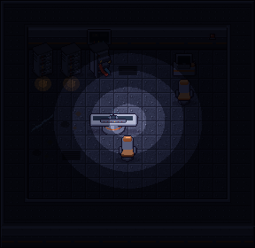
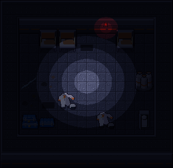
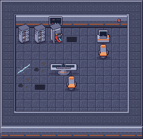
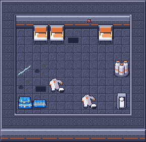
vesper_hatch) refeita pelo rascunho do dono, sem luz. Script: tools/sprites/build_vesper_v07_r4.py (r3d nos objetos 3D, à mão nos decal/face). Paleta da VÉSPER: ardósia, laranja desbotado, contorno #1b1630.Abertura quadrada escura no chão, a grade redonda arrancada deitada sobre a borda (cima/esquerda, com sombra) e 4 parafusos soltos. A: grade menor, buraco com escada bem sutil. B: grade maior que deixa o buraco mais aberto, com um degrau largo no fundo. 32×32 bastou, não precisou de 64×32. Nomes: vesper_hatch_exit_A.png / _B.png (a antiga com luz do dia fica só no histórico).
| id | nome | lugar | tiles | colide | sprite | ícone |
|---|---|---|---|---|---|---|
prop_command_table | Mesa de comando (holomapa) | floor | 2×1 | sim | 64×40 | icon_prop_command_table 16×16 |
wall_bunk | Beliche de parede | face | 1×1 | não | 32×24 | icon_wall_bunk 16×16 |
prop_uniforms | Uniformes largados | decal | 1×1 | não | 32×32 | icon_prop_uniforms 16×16 |
prop_suit_locker | Armário de traje (EVA aberto) | floor | 1×1 | sim | 32×40 | icon_prop_suit_locker 16×16 |
prop_o2_cylinders | Cilindros de O₂ tombados | floor | 1×1 | sim | 32×40 | icon_prop_o2_cylinders 16×16 |
wall_cable_panel | Painel de cabos soltos | face | 1×1 | não | 32×24 | icon_wall_cable_panel 16×16 |
prop_server_rack | Rack de servidor | floor | 1×1 | sim | 32×40 | icon_prop_server_rack 16×16 |
prop_server_rack_open | Rack de servidor aberto | floor | 1×1 | sim | 32×40 | icon_prop_server_rack_open 16×16 |
prop_workstation | Estação de computador | floor | 1×1 | sim | 32×40 | icon_prop_workstation 16×16 |
prop_pilot_chair | Cadeira de piloto | floor | 1×1 | não | 32×40 | icon_prop_pilot_chair 16×16 |
prop_container_stack | Pilha de contêineres | floor | 2×1 | sim | 64×40 | icon_prop_container_stack 16×16 |
PROP_SPRITE_SIZE: o rack alto cabe nos 40 px.wall_* (face, 32×24): overlay com fundo transparente, blit em (tx·32, ty·32+8) por cima da face normal, como o wall_monitor_*.prop_uniforms é decal 32×32 (como o prop_ice_stain), sem colisão. Sugiro lugar decal e cenário (custo {}).Montagens no escuro com a casca aprovada: cabine (mesa de comando, racks, estação, cadeiras, painel de cabos) e alojamento (3 beliches de parede, uniformes no chão, armário de traje, cilindros de O₂, pilha 2×1). O brilho laranja dos racks e o vermelho da luz são só da montagem.
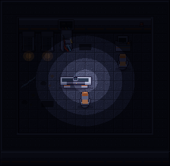
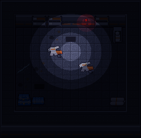
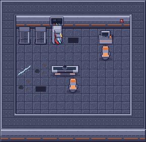
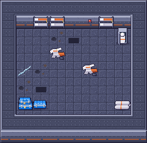
prop_container_stack (32×40, prop de chão de 1 tile, pé no tile, blit em (x, y−8) como os prop_*) e icon_prop_container_stack (16×16). Motor r3d (tools/sprites/build_vesper_v07_r3.py), mesmo case azul do container_sealed/container_open (corpo, faixa de prata, tampa com gomos, cintas, selo), só menor. O vesper_container_broken foi cancelado: a câmara fria usa o container_open.png aprovado (aparece na sala de teste). Do rascunho do dono aproveitei a composição: 2 caixas embaixo lado a lado, a da direita menor e recuada, e 1 em cima à esquerda.#e2733a), a carga marcada. Pior leitura do "empilhado" que a A, mas mais variada no cenário.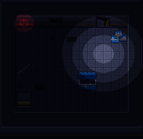
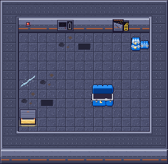
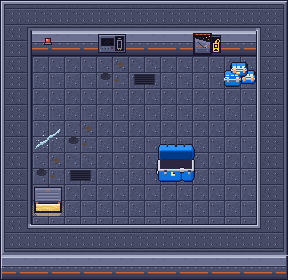
Montagens: pilha no canto de cima à direita, container_open.png (aprovado) no centro, escotilha B e luz A. A montagem é só pra ver o conjunto no escuro.
pendentes/, intactos). Refeitos agora: contêiner no motor r3d (tools/sprites/build_vesper_v07_r2.py, molde do chests_r3d.py: mesmo case, material e luz do container_sealed), escotilha de SAÍDA e luz de emergência menor. Sufixos _A/_B; as de antes não foram sobrescritas.Salas no escuro com cada conjunto (A: contêiner A + escotilha A + luz A; B: idem B). O halo vermelho e o amarelo da escotilha são só da montagem.
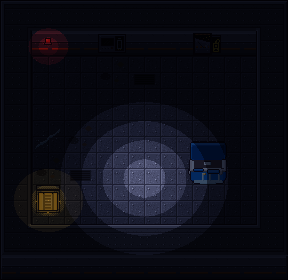
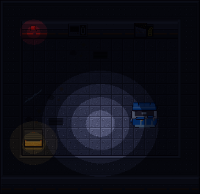
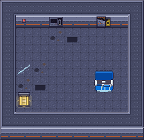
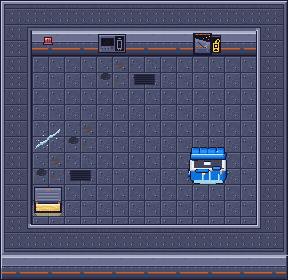
Montada só com os sprites, na ordem do jogo: chão, escotilha, topo/face da parede, contêiner pelo pé. Porta emperrada à direita, painel no meio, luz de emergência à esquerda, escotilha no canto de baixo.
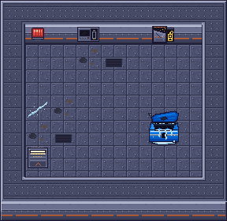
Círculo de lanterna em 5 degraus. A luz de emergência pinta de vermelho só em volta dela.
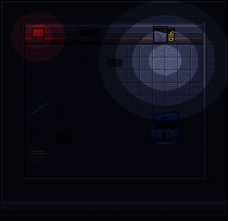
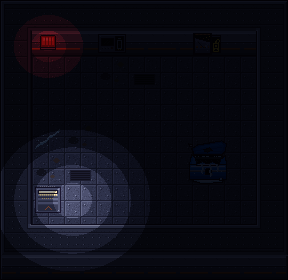
| Arquivo (pendentes/) | Tamanho | Como usar |
|---|---|---|
hull_wall_top.png | 64×96 | Atlas A2, mesmo layout do base_wall_top (game/autotile.py); topo em (x, y−24). |
hull_wall_face.png | 128×24 | 4 peças 32×24, índice = W + 2·E, em (x, y+8) quando não há parede embaixo (igual ao base_wall_face). |
hull_floor_0..3.png | 32×32 | Chão. 0 = chapa limpa (o comum), 1 = manchas, 2 = grelha, 3 = risco de gelo. Sugestão: 0 em ~75%, as outras raras. Emendas casam entre tiles. |
vesper_hatch.png | 32×32 | Tile da boca do porão (saída), no chão, abaixo de player/props. |
vesper_container_broken.png | 40×44 | Mesma âncora do container_sealed: pé no centro de baixo do tile, blit em (x−4, y−12) para o tile onde fica o pé; ordenar pelo pé. |
vesper_power_panel.png | 32×24 | Face de parede, opaca (já inclui a face do casco): blit em (x, y+8) no lugar da peça da face. Encaixe da bateria em x 20–26, y 5–17. |
vesper_jammed_door.png | 32×24 | Idem, face opaca em (x, y+8). Leitor de crachá em x 19–28, y 3–20 (centro (24,12)). A porta ocupa x 1–19. |
vesper_emergency_light.png | 32×24 | Idem, face opaca. Centro da luminária ≈ (16, 10) no sprite, útil pra posição da luz vermelha/faísca. |
hull_wall_face 96×24 (3 variações), mas o base_wall_face real tem 128×24 (4 peças, W + 2·E, o draw_base_wall usa idx·T com idx 0..3). Entreguei 128×24 pra reusar o mesmo código. As 3 peças de face (painel, porta, luz) são faces completas, então a célula tem que trocar a peça normal por elas.